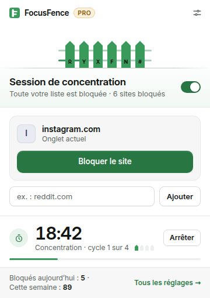
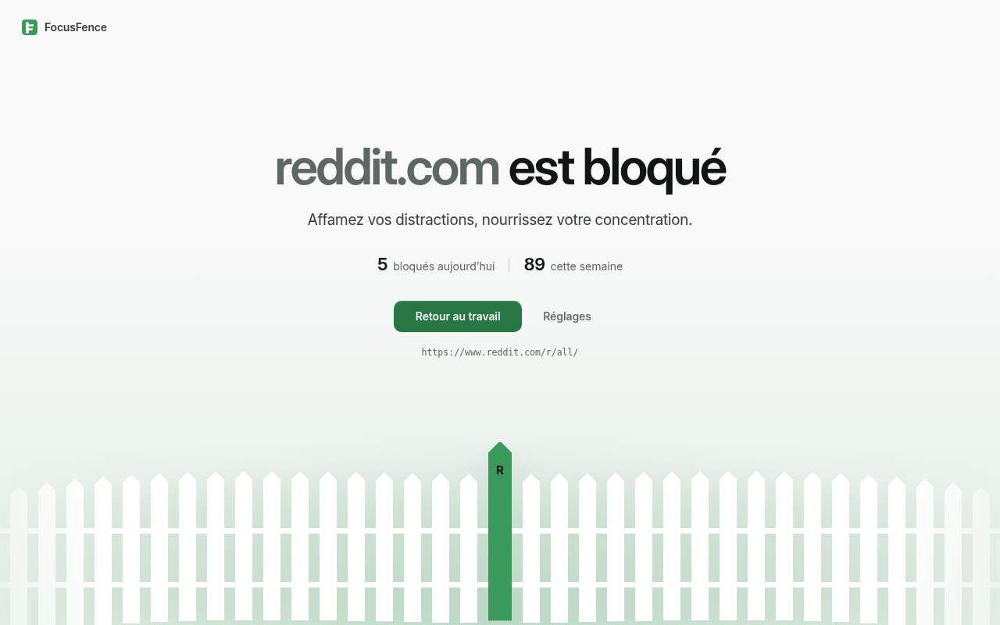
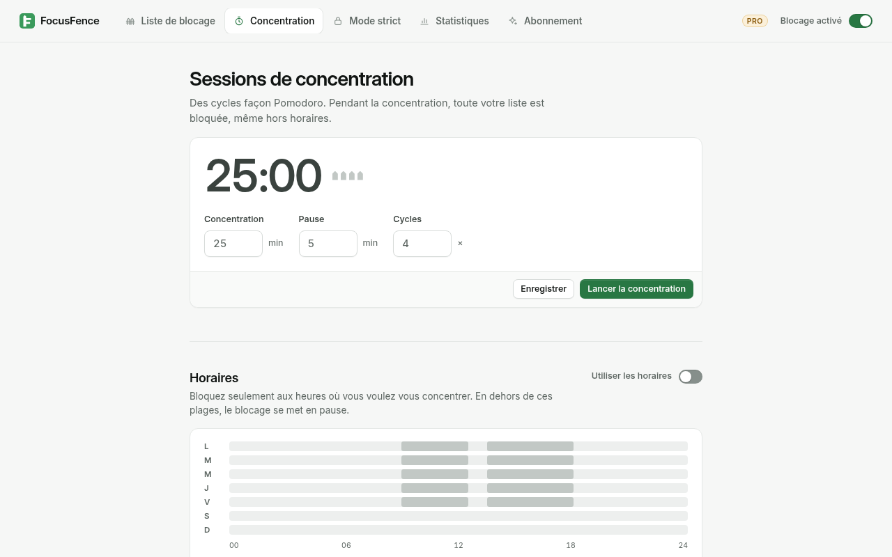
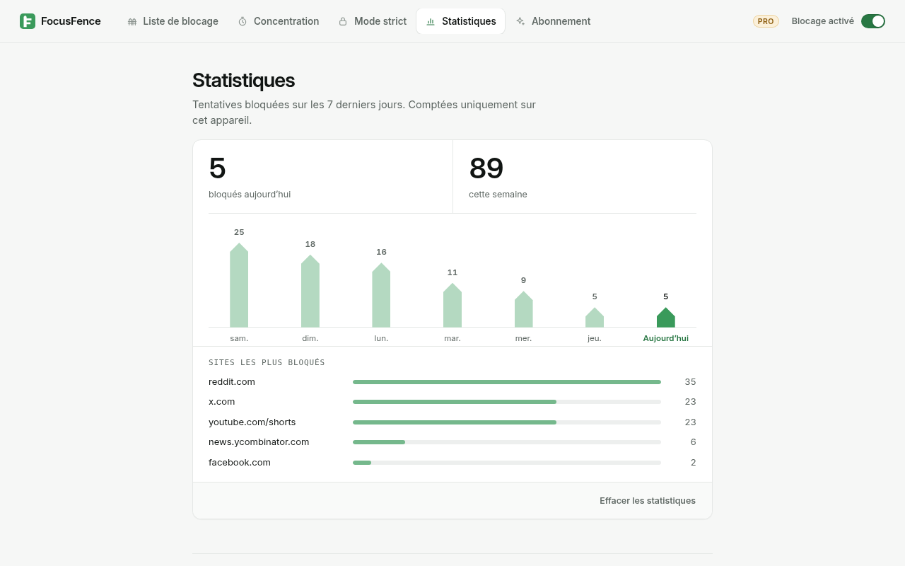

Bloqueur de sites pour Chrome
Clôturez les fils sans fin.
FocusFence bloque en un clic les sites qui vous volent votre attention. Bloquez tout Reddit, ou seulement les Shorts YouTube. Fixez vos heures de concentration. Quand la volonté flanche, activez le mode strict.
Gratuit pour toujours, sites illimités · Sans compte · Sans pistage


Tout ce qu’il faut pour rester concentré. Rien de superflu.
Bloquer un site en un clic
Ouvrez la fenêtre et appuyez sur Bloquer le site. Bloquer reddit.com bloque aussi old.reddit.com, m.reddit.com et tous les autres sous-domaines.
Bloquer seulement la mauvaise partie PRO
Bloquez youtube.com/shorts et gardez le reste de YouTube pour les tutoriels et les conférences. Les Shorts ouverts depuis YouTube sont aussi bloqués. Les règles par mot-clé bloquent toute adresse qui contient un mot.
Plannings PRO
Bloquez seulement pendant vos heures de travail, les jours de votre choix. Les plages de nuit fonctionnent aussi, par ex. 22:00–06:00 pour mieux dormir.
Sessions Pomodoro PRO
Des cycles de concentration et de pause minutés. Toute votre liste est bloquée pendant la concentration. Le compte à rebours s’affiche sur l’icône de la barre d’outils.
Mode strict PRO
Tant que le mode strict est actif, impossible de désactiver le blocage ou de retirer des sites. Pour l’arrêter plus tôt : 10 minutes d’attente et un texte à recopier.
Statistiques, mot de passe et plus PRO
Voyez les tentatives bloquées par site et par jour. Protégez les réglages par mot de passe, écrivez votre propre message de blocage, exportez et importez votre configuration.


Vos données restent sur votre appareil
Votre liste, vos réglages et vos statistiques sont stockés localement dans Chrome. Pas de compte, pas de statistiques d’audience, pas de publicité.
FocusFence ne lit pas vos pages
Le blocage passe par le moteur de règles intégré à Chrome (declarativeNetRequest). FocusFence ne voit jamais le contenu des pages que vous visitez.
Permissions minimales
FocusFence demande l’accès site par site, uniquement pour les sites que vous bloquez. Si vous refusez, le site reste bloqué.
Des tarifs simples
Gratuit
- Sites bloqués illimités
- Sous-domaines inclus
- Blocage en un clic depuis la fenêtre
- Interrupteur marche/arrêt
- Page de blocage apaisante
Pro mensuel
- Tout le plan Gratuit
- Plannings
- Blocage par chemin et mot-clé
- Sessions Pomodoro
- Mode strict
- Mot de passe, statistiques, message personnalisé, sauvegarde
Pro annuel −44 %
- Tout le plan Pro mensuel
- 12 mois pour moins que le prix de 7
Paiements traités par ExtensionPay (Stripe). Prix en euros dans la zone euro ; ailleurs, 2,99 $/mois ou 19,99 $/an.
Questions
Puis-je bloquer les Shorts YouTube et garder YouTube ?
Oui, avec Pro. Ajoutez youtube.com/shorts comme règle de chemin. youtube.com, les vidéos et la recherche continuent de fonctionner. Les liens vers les Shorts et la navigation vers les Shorts dans YouTube sont bloqués.
Bloquer reddit.com bloque-t-il aussi old.reddit.com ?
Oui. Une règle de domaine couvre tous les sous-domaines, en Gratuit comme en Pro.
Pourquoi Chrome demande-t-il une autorisation quand j’ajoute un site ?
Chrome ne permet à une extension d’afficher sa propre page de blocage que sur les sites auxquels elle a accès. FocusFence demande l’accès à ce seul site. Si vous refusez, le site reste bloqué, mais vous verrez la page d’erreur de Chrome au lieu de la page de FocusFence.
Peut-on contourner le mode strict ?
Réponse honnête : Chrome permet toujours de désactiver ou de supprimer une extension, et FocusFence ne peut pas bloquer la page des extensions. Une session stricte minutée se met en pause quand FocusFence est désactivé : son temps ne s’écoule pas en arrière-plan. Les fenêtres de navigation privée ne sont couvertes que si vous y autorisez FocusFence, qui vous prévient sinon. Les autres navigateurs et appareils ne sont pas couverts.
Quelles données collectez-vous ?
Aucune. Voir la politique de confidentialité. Le seul trafic réseau est la vérification de votre licence par ExtensionPay, et seulement après que vous avez choisi de passer à Pro.
FocusFence est-il open source ?
Oui, sous licence GNU AGPL v3. Lire le code.